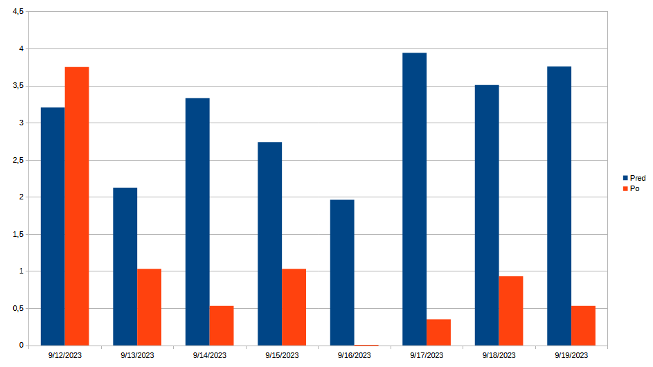
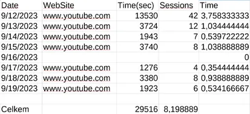

První týden - Jak mi to šlo?
Týden uběhl a jak jsem sliboval, sdílím s Vámi můj průběh touto životní výzvou. Říkat tom uživotní výzva je absurdní, protože by to neměla být žádná výzva. Ale řekněte člověkovi, který je závislý na kokainu, ať přestane brát ten stupidní bílý prášek. Však to je jenom prášek. Pro mě je youtube něco jako droga v tento moment. Ačkoliv to zní absurdně, tak se k tomu musím takto stavit. Problémy mojí generace.
V minulém článku (kdo nečetl, tak zde) jsem sdílel dvoutýdenní statistiky časů na youtube. Došel jsem k závěru, že na youtube průměrně strávím cca 3 hodiny denně a týdně to bylo cca 21 hodin. Což je nepřijatelné. Za to se stydím. Mým postupem v tomto týdnu bylo, že jsem si naistaloval rozšíření do prohlížeče, které mi zamezí sledování youtube po dosažení časového limitu, který se nuloval každý den. Ale nebylo to 100%. Jelikož mi stačilo pouze překliknout do jiného prohlížeče a byl jsem volný. I když jsem tuto možnost měl, tak jsem ji využil pouze jednou jedinkrát. A to když jsem ke konci týdne onemocněl. Ležel jsem celý den v posteli a první den jsem naštěstí prospal, to půjde vidět na grafu níže. Následující den jsem koukal na nostalgická videa, jelikož jsem měl zakázáno vylézt z postele. To byl mů jediný prohřešek.
Samozřejmě ty hodiny, které jsem ušetřil jsem musel někam investovat. Investoval jsem jej do trávení času s přáteli. Konkrétně hraním her s kamarády. Nemyslím si, že to je produktivní činnost, ale rozhodně lepší než youtube. Trávení času s přáteli, ať už jakkoliv je benefitující si myslím. Také jsem začal trávit více času na twitteru, ale tam se nebojím o závislost, jelikož to není tak poutvé, jako youtube.
Moji další strategií je udržet tento režim do konce tohoto měsíce striktně a nehodlám nadále povolovat a hodlám setrvat v tomto režimu. Budu se snažit nepodvádět jiným prohlížečem, pokud to nebude nezbytně nutné. Pokud budu potřebovat více času, nastolím jiný plán. Další příspěvek o mé youtube závislosti bych tedy čekal 1. října. To bude ten 1 měsíc a můžeme si nechat vyčíst data z celého měsíce.